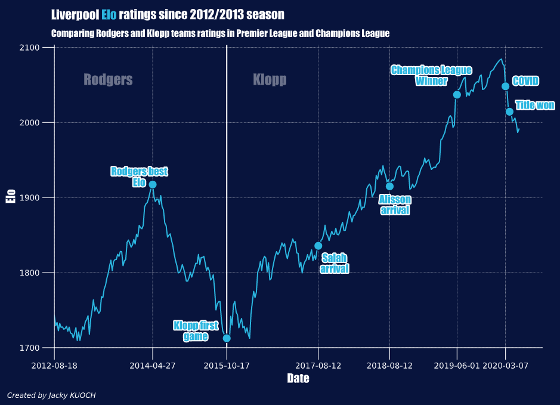
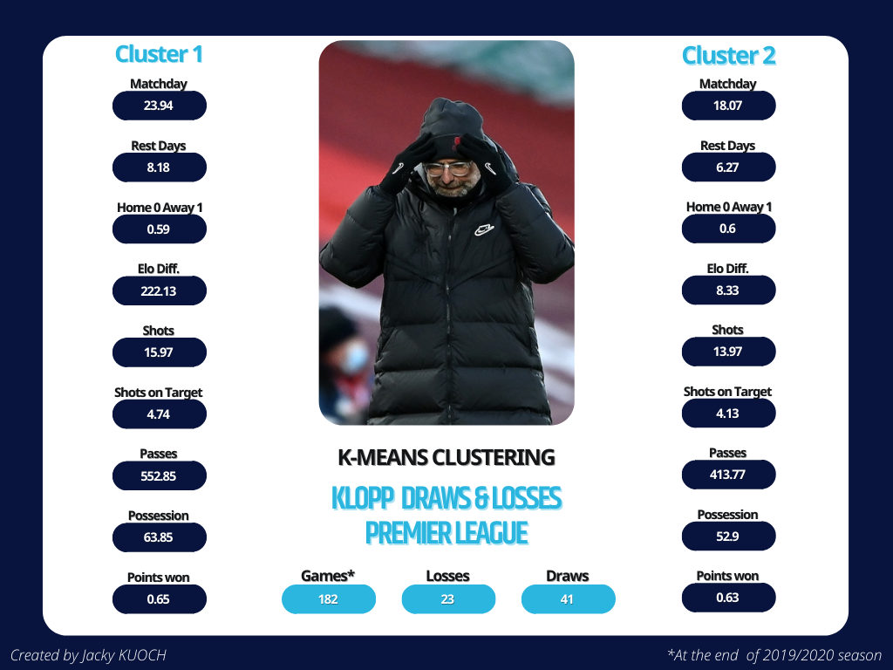
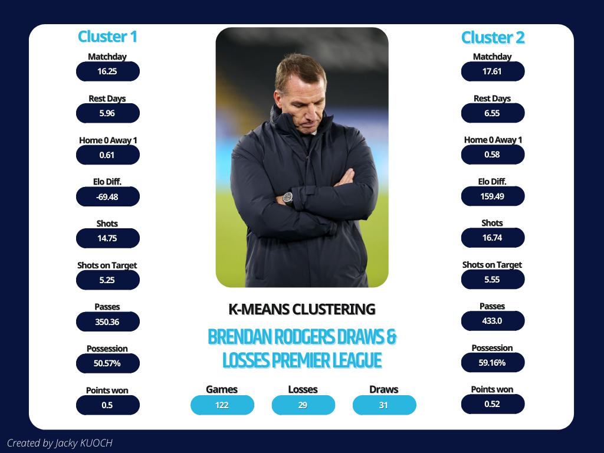
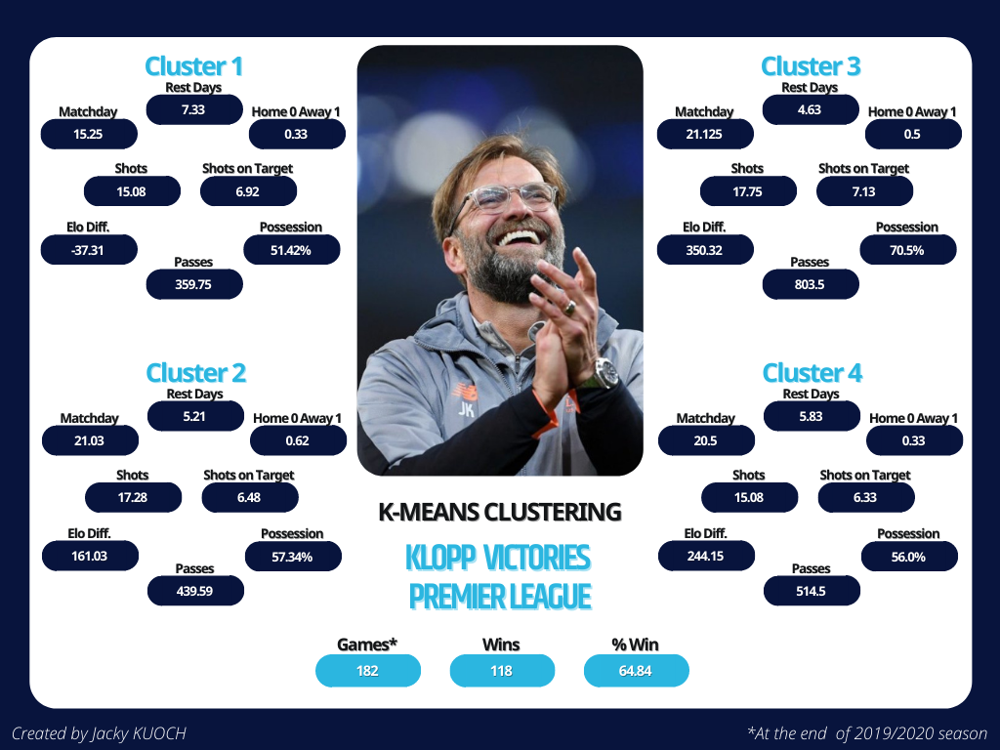
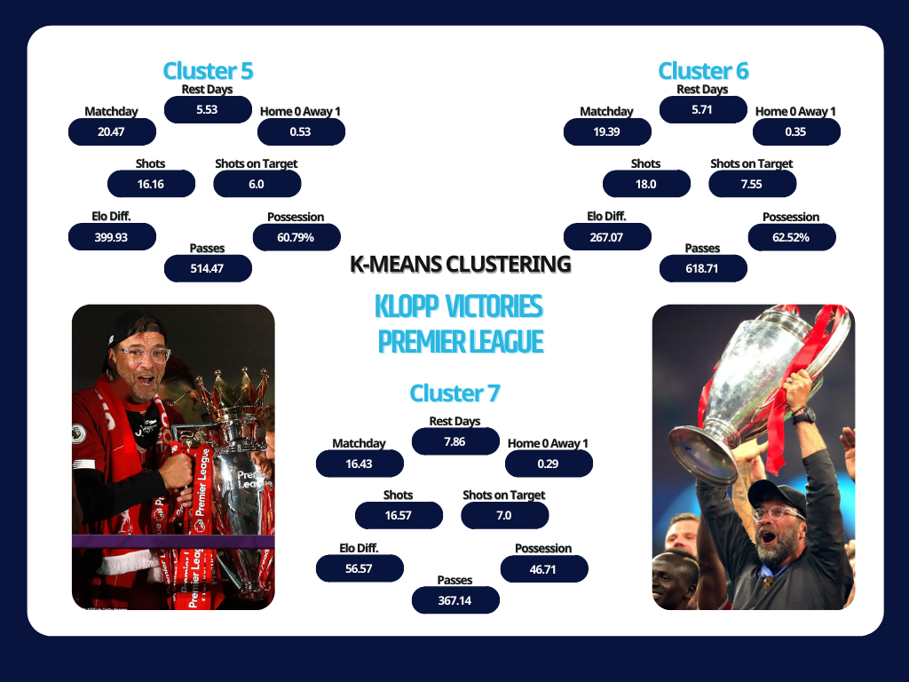
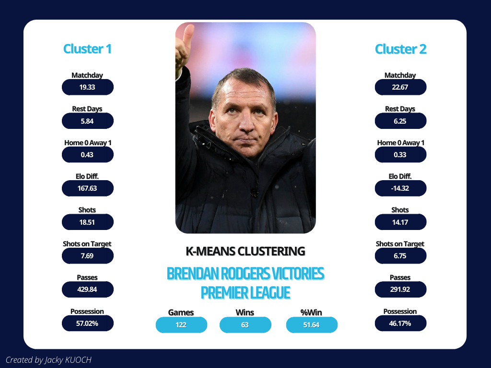
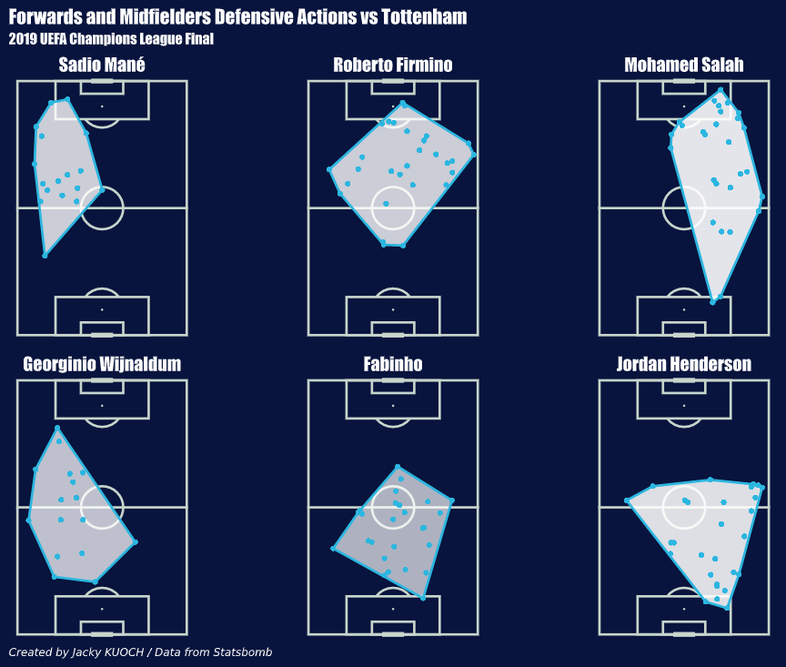
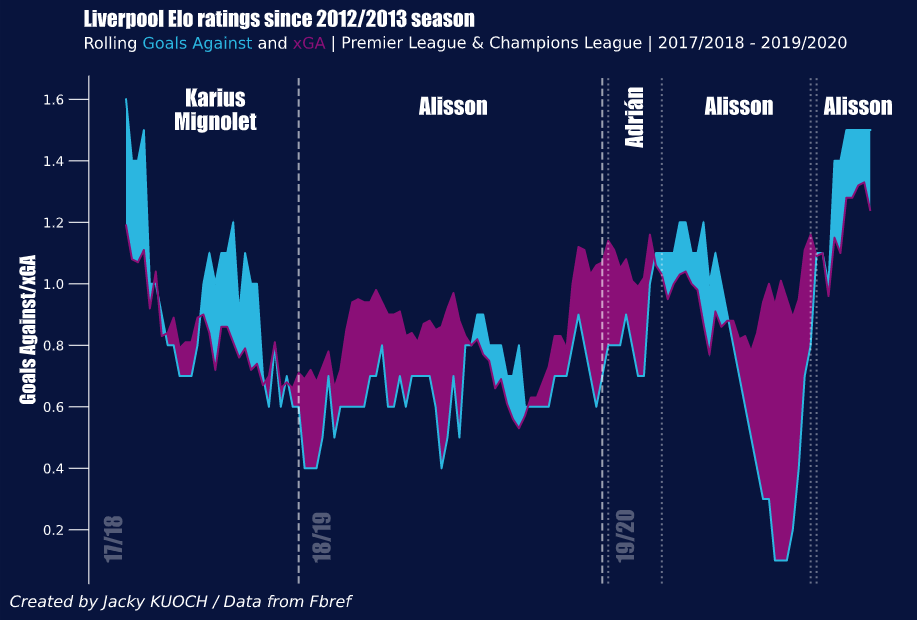
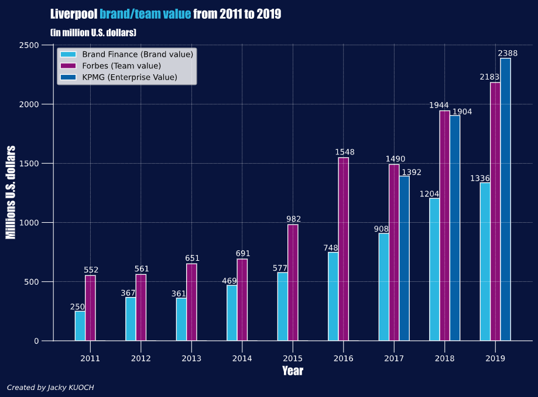

June 25th 2020. After a Chelsea's 2-1 win over Manchester City, Liverpool were confirmed Premier League champions and ended a 30-year English Premier League title drought. Liverpool's 23-point lead over City with seven games left put an end to the title race breaking the record for winning a title with five matches to spare.
On 8 October 2015, after seven years at Borussia Dortmund, Jürgen Klopp agreed to become Liverpool manager. This arrival was the foundation of Liverpool's renewed success in the English league and the starting point of a new era for the Reds. Klopp's appointment coincided with data's expansion in the football field where a lot of new data were collected and made public.
Replacing Brendan Rodgers.
Stepping in as Brendan Rodgers' replacement was not an easy task for Klopp. His first games were pretty good but Coutinho's injury after a few games caused a series of bad results but soon after Coutinho comeback, the machine was fired up. Klopp had to build on a squad that suffered a cruel season ending after the infamous Gerrard slip. This game against Chelsea was the apex of Rodgers' Liverpool, a defeat that costs them the title. It was the closest Liverpool had come to winning the league title since 1990.
As we see on the following chart, representing the Elo depending on the Premier League and Champions League fixtures date, the highest Elo rating ever reached by Liverpool under Rodgers was during this crucial game against Chelsea. This loss was the beginning of a drop in Liverpool Elo as the squad was not able to recover from this desillusion resulting in Rodgers dismissal.
As a matter of fact, Klopp was appointed early in the 2015-16 season, having to deal with a squad he didn't choose and not fitting in his notable Gegenpressing, a tactic requiring great amounts of speed, organisation and stamina. Proof ot this was that, at the following summer transfer window, Klopp carried out multiple changes in the squad in order to bring in players matching his criterias and transferring out numerous players like Benteke, Škrtel or Balotelli.
With a new squad and players like Firmino, Mané or Matip, Klopp slowly established his philosophy and style of play that he shaped during all these years at Dortmund. The Elo kept increasing to reach levels never seen before at Anfield. Through the seasons, Liverpool kept getting better and better with new fundamental players added at each mercato like Salah, Van Dijk, Alisson but also Fabinho, Robertson and the Academy's gem Trent Alexander-Arnold.
Trent & Robbo
Huge part of the success is down to these two last players. Trent Alexander-Arnold and Andy Robertson form one of the most lethal full-backs combination in the world. Klopp entrusted both the players with the task of attacking from the wings. Their ability to put the ball in the box from the sides, to deliver crosses with great precision and to make a run after another made them become essential playmakers in Liverpool attack.
When looking at these heatmaps, representing Alexander-Arnold and Robertson touches during the game against Tottenham in the 2019 UEFA Champions League Final, we have an overview of their field of action. Here, we get a look on how high on the pitch they can sometimes be, especially for full-backs. But this is something common for Liverpool as they grew stronger through the years. Liverpool being favourite means their opponent would go for a rather defensive strategy and therefore less threatening for Liverpool allowing Trent and Robbo to perform on the flanks and to stretch the opponent's defense by playing one-twos with the forwards, running inward behind Salah or Mané or delivering crosses into the box.
Being able to rely on such a pair of attacking defenders in an era where full-backs are hard to find (just ask PSG) and play a crucial role in the attack system of each team is a huge advantage. Players like Alba, Cancelo, Hakimi or Davies are the perfect example of the modern full-backs who must be complete players as they are no longer only concerned with defensive tasks but also have to participate in the offensive game, particularly under coaches like Guardiola, Tuchel or Klopp.
What Klopp really changed ?
We first thought about what factors contribute to Liverpool not winning a game and came up with a list of factors. Looking at some statistics for Brendan Rodgers and Jürgen Klopp gives us an overview of what Klopp kept and what he changed. To observe these changes we compared some pre-game and in-game statistics and split the games in two categories: wins on one side and draws/losses on the other. We tried to find similarities in these games to make out a pattern in wins or to determine the potential causes of points losses.
To do so, we used an unsupervised Machine Learning algorithm: K-Means Clustering. It's a method that computes the average at multiple locations (cluster) in numerical data and to gather similar observations in clusters. The benefits of using K-Means as opposed to a normal average calculation is clear. As an example, pretend that we are using K-Means on the Possession feature in our data, and for Klopp losses/draws Liverpool had 38%, 41%, 43%, 65%, 68% and 70% of ball Possession. If we were to calculate the average normally, we would get 54%, which would lead us to believe that Liverpool lost when the ball was equally shared between the two teams, but we can easily see that it is not the case. Using KMC with 2 clusters would give us a much better representation of our data and tell us that Liverpool lost/drew in some cases when they didn't have the ball and other cases when they had the stranglehold on the ball.
K-Means requires only numerical data. First, we selected data like the number of passes, shots or shots on target and then we had to create some data like the matchday and the Home 0 Away 1 feature which allowed us to have information on the venue of the games. We know how important it is to study the venue when talking about Liverpool and its famous stadium: Anfield.
Klopp Defeats and Draws:
Two clusters help us to understand the draws and losses of Klopp teams. We briefly mentionned Anfield and its importance but it's when looking at these two clusters that we realize that defeats and draws rarely take place at home. Moreover, these games are likely to be draws as we see with the number of points won for both clusters closer to 1 than to 0.
Cluster 1 gathers games in which Liverpool are favourite and expected to win according to the Elo difference. Being favourite usually involves more ball possession, more passes and a slightly higher number of shots for Liverpool. However, the games included in this cluster testify that having the ball doesn't necessarily secure the win. Despite the rather high possession rate aroud 64%, Liverpool can't attain the 3 points. We are here talking about fruitless possession.
Contrary to the first cluster, the second one represents games in which Liverpool is facing its competitors in the title race. The matchday feature, on average, 18.06 marks a turning point in each season. Indeed, games taking place around this date are usually Boxing Day games during which top-tier teams face each other. Liverpool, being an historical club, often take part in those fixtures that are decisive in the outcome of a season. However, the existence of this cluster shows Liverpool's difficulty in dealing with this important time of the season.
Number of rest days doesn't seem to influence the outcome of the games but looking at it we can hypothesize that, due to the physical requirements and the importance of keeping the pace moving, too long breaks are not beneficial for Liverpool's players who are used to busy schedules.
Rodgers Defeats and Draws:
When looking at Rodgers clusters, we spot a difference in the points won feature which shows us that we have here both defeats and draws contrary to Klopp where we had more draws than losses. Once again, these games are mostly away games displaying how hard it is for Liverpool outside of Anfield or how incredibly strong they are at home. As for Klopp, clusters split the data in two categories: games where Liverpool face their competitors and games where Liverpool are most likely to win.
The main difference between the two coaches lie in the games where Liverpool are front runner. Where Klopp's teams will multiply passes, Rodgers' ones will less circulate the ball with therefore less passes. Even with a high possession rate, a high number of shots and a good percentage of shots on target, Liverpool were not able to bring back the win. These games can cost a title when looking back at the end of a season.
Nevertheless, it is important to consider the players available for each coach. Indeed, Liverpool players back then were not players known for their technical sharpness and their will to control the ball while during Klopp era, players are selected and recruted on rigorous criterias that Klopp's style of play defines.
Klopp Wins:
 What is striking is the number of clusters used to describe Klopp victories. Using 7 clusters was a choice based on a Silhouette Analysis giving the best number of clusters according to the data. This shows how Liverpool system is varied and adaptable.
Number of shots doesn't vary a lot between clusters with around 15 shots. Following on from what we said on the importance of rest days on defeats, we here observe that, on average, the majority of clusters have 5 rest days compared to the 7 rest days in defeats/draws clusters.
We can tell the difference between the clusters describing games at home (1,4,6,7) in which we find 62 games and the clusters away from home (2,3,5) with 56 games according to the venue feature. This emphasizes how important are Anfield and the fans because, with what we saw on defeats and draws, playing at home is a sizeable strength, especially for the Reds and their unconditional supporters.
Two clusters (1 & 7) gather matches where Liverpool face their competitors. We notice a similar pattern between these two clusters having a low number of passes and a good rate of shots on target. When compared to the other victories clusters, the possession rate is really below the average rate but, this is usually an intentional choice. Indeed, in those kind of games, Klopp bets on a particular strategy reserved for big opponents; namely relying on wingers' pace as well as counter-attacks and therefore not having the ball monopoly.
We saw earlier that since Klopp arrival, the Elo kept increasing, implying that Liverpool were getting stronger and therefore more often the team most likely to win according to the Elo difference. The remaining clusters gather games where Liverpool's Elo is much higher than their opponent's one. As a consequence, opponents opt for a defensive strategy and let Liverpool control the ball and that is what we see in these clusters where the possession rate is between 56% and 71% and between 439 and 804 passes.
Rodgers Wins:
Rodgers wins are mainly home games which counterbalance their away defeats. Cluster 1 includes 51 games while the second one contains only 12 games. First one describes games in which Liverpool are expected to win following their Elo rating and manage to meet the expectations. This context translates into a high number of shots, passes and a good possession rate.
When facing big teams, the style of play is radically different with the choice, or not, to let the ball to the opponents as the possesion percentage and number of passes give evidence. These reductions are accompanied by a reduction in the number of occasions and therefore number of shots.
What stands out immediatly when looking at the statistics is the poor portion of away games in the two clusters. Indeed, Rodgers faced a problem known by many coaches during his time at Liverpool, namely failure to win games outside of their home stadium. This is one thing that Klopp managed to change since his arrival: the ability to win when travelling away from Anfield and to offer a beautiful offensive game even without the home advantage.
What about Gegenpressing then ?
We talked a lot about possession rate and passes which are not the fundamental principles of the Gegenpressing. This playstyle, that Klopp shaped during his years at Dortmund, became really popular in the late 2010s after years of tiki-taka. However, we were not able to observe the Gegenpressing effects through the K-Means but, Klopp was named Liverpool's coach because of his character and his vision of football. So, where do Liverpool stand on Klopp's philosophy ?
Let's first define the Gegenpressing. Gegenpressing is the German for "counter pressing" is a tactical philosophy which core is that teams press their opponents with focus and fervor when the ball is in the opposition territory, therefore countering the counter-attack.
Following Klopp's appointment, multiple players were signed shortly after so that Liverpool squad could match this philosophy's prerequisite. Gegenpressing requires forwards to commit to a lot of running as they are instructed to rapidly close down the other team defenders to force an error when an attempt is made to play the ball out from the back.
While it is important to maintain a high level of pressing throughout the game, players must be able to evaluate on their own when to fall back into a defensive position to keep some energy. For this reason, Gegenpressing works better with a forward line which is particularly quick and fit, but also clever enough to make use of opposition mistakes.
However, the rest of the team is also essential in this strategy. They must be correctly positioned in order to support the press from the front by closing down any potential passing options for the opponent who has the ball. But they also have a role in the offensive setup if the full-backs or midfielders are well placed to play devastating crosses once the ball is won back.
Here we have a look at the defensive actions during the 2019 UEFA Champions League Final for Liverpool forwards and midfielders. By "defensive actions", we mean interceptions, attempts to recover a loose ball and applying pressure to an opponent who is receiving, carrying or releasing the ball.
We can easily guess at which position each of the player represented plays and his role. Mané, Firmino and Salah are in charge of pressing the opposition backline very high on the pitch with Mané on the left, Salah on the right and Firmino in the center. Their defensive actions can take place at the center of the pitch but also in the opposition penalty area illustrating perfectly their role in the Gegenpressing strategy.
The midfielders are in charge to support the forwards in their defensive tasks, positioned right behind the forwards with Fabinho and Henderson lower on the pitch to cover the wingers while Wijnaldum insures the transition between Liverpool attack and defense by positioning himself a bit higher on the pitch not far from Mané. These 3 midfielders are key players in the Gegenpressing tactic but they are not only assigned to defensive tasks.
Since Klopp arrived at Liverpool, his philosophy evolved. His teams don't rely solely on pressing and counter-attacks anymore, Klopp developped his tactics to incorporate more possession and more organisation. Defenders, midfielders, forwards but also goalkeeper must be skillful enough to switch from one style to another.
What about defense?
Despite their attacking prowess, Liverpool was still missing an essential thing for any contenders: a rock solid defense. Klopp sought to fill this shortage by signing defender Virgil Van Dijk, a world record transfer fee for a defender and goalkeeper Alisson also for a world record fee for a goalkeeper at the time.
We mentionned Robertson and Alexander-Arnold emergence as starters at fullbacks, but with Van Dijk and Alisson, Liverpool finally had a backline on which they could have absolute confidence. These transfers translated into a drastic drop in number of goals conceded and expected goals against.
On this graph, we have an overview of goals conceded and expected goals against on a rolling 10 game average from Liverpool last season before Alisson arrival right up to the end of 2019/2020 season.
What's pretty obvious is that, since the Brazilian first game, Liverpool conceded below expectation. Purple areas represent periods during which Liverpool defense performed really well as their expected goals against (xGA) predicted that Liverpool would concede more goals that they actually conceded in the end while blue ones are the opposite.
Purple areas were more isolated when Liverpool had to switch between Loris Karius and Simon Mignolet. Liverpool defense struggled to meet the expectations and even conceded more goals than expected in numerous games. Not having a stable keeper is a big weakness for every team's defense and that was Liverpool's problem resulting in poor defensive performances.
During the 2018/2019 season, Alisson's first season and Van Dijk first complete seaons, Liverpool almost always outperformed the expectations with a single very short blue phase. Moreover, average goals conceded are much lower than before even in times where xGA were higher showing how impenetrable was Liverpool defense during that season.
League-winning season started with an injured Alisson and Spanish goalkeeper Adrian taking over for a short period of time. Alisson struggled to find his previous level again at his comeback, but once he was completely fit, Liverpool started a period where the defense performed at such a level that the gap between xGA and goals conceded was truly impressive. That period was a huge milestone in the league title quest where no team could follow Liverpool rythm.
Alisson and the whole Liverpool defense played an integral part in Liverpool's Premier League title-winning effort during which Liverpool broke or tied several all-time records. They contributed not only by keeping clean sheets, but also by building actions from the back which made midfielders and forwards work easier.
What changed on a global scale?
Every player plays a role in Klopp system. If one player fails to fullfill his tasks, it's the whole system that could collapse. Each player must be capable of reading the game, understanding his role in any given situation, and adapting quickly. Finding such players can be hard and costly. Liverpool board believed in Klopp since his arrival and were ready to invest, so that he could build a team fitting his philosophy but also develop players at various levels. Investments were made in transfer fees, training facilities but contributed in the growth of Liverpool as a company as we can see it on the graph below:
First, let's define our terms. Brand Finance measures a team's brand value by looking at its brand strength (degree of public interest and commercial support), revenues from matchday, commercial and broadcasting streams. Forbes calculates a team's value based on its economic performance from matchday, broadcasting, and commercial sources, as well as any additional value generated by its market position or potential. Finally, KPMG presents a team's enterprise value, taken from its profitability, popularity, sporting potential, as well as the value of broadcasting rights and revenue opportunity stemming from stadium ownership.
In 2018, La Gazetta dello Sport revealed that Manchester City had spent more than any other European club on
transfer fees accross the previous decade, dwarfing the outlay at Liverpool by nearly £600 million.
Chelsea's spending had also been greater than Liverpool's by £180 million. The two clubs whose deeper
pockets helped them overtake Liverpool in sporting terms.
While Liverpool lifted just one trophy since 2008, Manchester City took three Premier League titles, one FA
Cup and four League Cups. Chelsea, meanwhile, lifted their first Champions League, a Europa League, three
domestic league titles, four FA Cups, as well as a League Cup. At the same time, Fernando Torres' transfer
from Liverpool to Chelsea in 2011, but also Sterling's move to City four years later, felt symbolic:
Liverpool were not part of Premier League elite anymore.
Klopp had started to change that through his charisma, vision and leadership. Klopp arrived in 2015 and we easily see the effect on the brand/team value. For years, the value was pretty stable until Klopp's appointment, but once his first season completed, the team value, according to Forbes, more than doubled to reach $1548 million in 2016. Liverpool's brand value also went up as the brand got stronger with the mentality Klopp brought that convinced Liverpool's fans but also investors and companies like AXA that became Liverpool's partner since 2018.
By the start of the 2018-19 season, Klopp had spent £382million but also had sold £289 million-worth of players, meaning a net spend of £93 million that turned Liverpool from finishing eigth into one of the front runners againts Guardiola's City who had achieved a net spend of £450 million in half a season less than Klopp. Van Dijk's decision to reject City for Liverpool had redressed the discussion, giving the impression that Liverpool were now spending their way back to the top. Klopp played a crucial role in building Liverpool squad by convincing players to sign for Liverpool instead of other big clubs but also by trusting players like Matip, Henderson or Milner that were already at the club.
Soon after his arrival, Klopp agreed to extend his contract until 2022 proving his commitment to the club and the project he started. Even though Liverpool suffered disillusionment in his first years, no one lost faith in Klopp and in the end, all the efforts and investments made paid off with a Champions League in 2019 and Premier League title in 2020 that bears Klopp's seal.